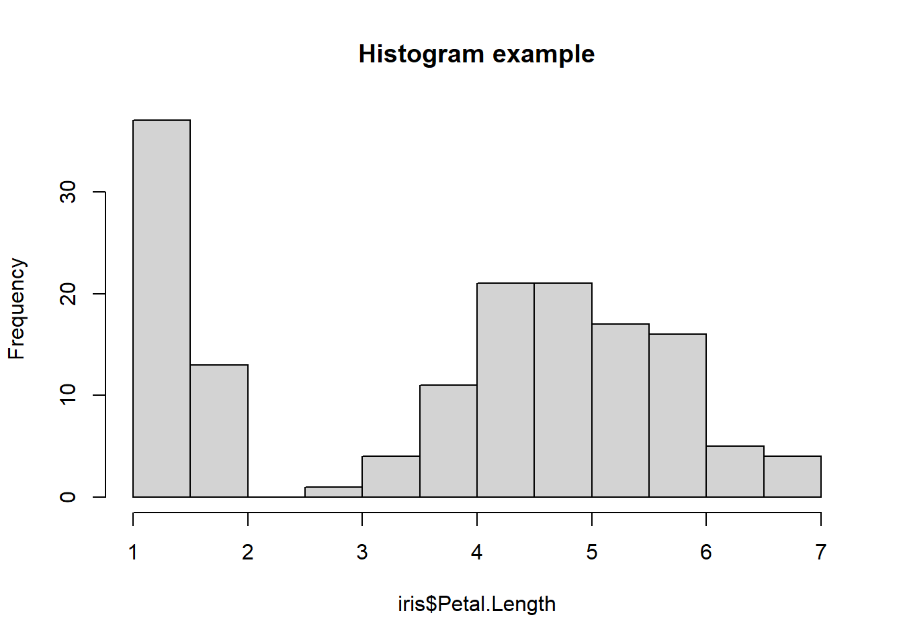
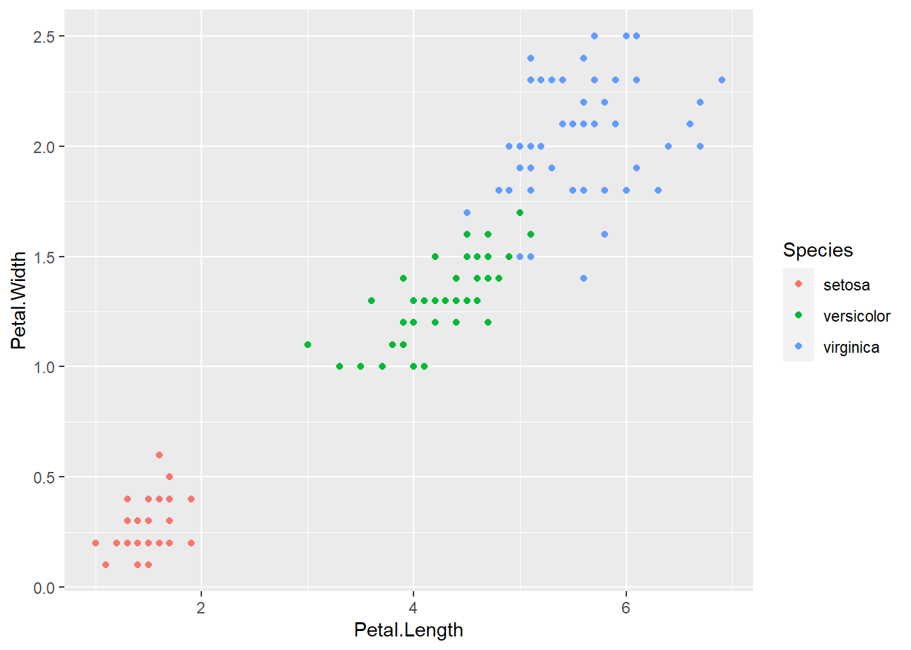

Chapter 6 Graphs
This chapter provides working example code for several graph types, which you can copy and modify for your own use. The code assumes that you have data.table, magrittr and ggplot2 installed and loaded.
# Load these for the examples below to work for you
library(ggplot2)
library(data.table)
library(magrittr)6.1 Base R or ggplot?
Base R and the ggplot2 package both have great graphing functionality. (And many other packages exist for less common types types of visualisations.) You can stick to one, but both come in handy. This is one way to use them:
- Base R for quick and dirty graphs, when you just want to see what the data look like, and you don’t need to show it to anyone else. For example, base R’s
plot()was used in the section 2.6.2 code. - ggplot2 for professional-looking graphs that don’t have a high degree of customisation. Most graphs tend to fall in this category.
- Base R for highly customised graphs. ggplot2 can be particularly fiddly if you want to include something in your graph that it isn’t built for. These cases are getting rarer as the package is continually developed, but when you encounter one, it can be much easier to use base R than trying to wrangle ggplot2.
6.2 Base R graph examples
# Single variable graph uses the order of the data for the x axis
plot(iris$Petal.Width)
plot(iris$Petal.Width, t='l') # Second arg means 'type' = 'line'. Default is points.# Some functions add features to an existing graph
plot(iris$Petal.Width,
ylim=c(0, 7)) # Specify the y-axis range. Also works for xlim.
lines(iris$Petal.Length, col='blue') # Adds another variable. points() works similar.
# Two-variable scatterplot
plot(iris$Petal.Width, iris$Petal.Length)# Next example modifies a few features. Many other things can be modified.
plot(iris$Petal.Width, iris$Petal.Length, col='red',
pch=20, # specify the point type. Options are here: https://r-lang.com/pch-in-r/
main='Example scatter plot',
ylab='Petal length',
xlab='Petal width',
xaxt='n') # Specify no ticks on x axis, so it can be manually added in
axis(1, # Axis ticks for side '1' (i.e. x axis)
at=c(0, 1.25, 2.5), # Where to put the ticks
labels=c(0, 1.25, 2.5)) # What to write under the ticks (could also be text)
legend(0.1, 6.5, # Coordinates for placing the legend
legend=c('Iris observations', 'Nothing of this colour in graph'), # Legend text
pch=20, # Legend symbols (could specify e.g. line type (lty) instead)
col=c('red', 'blue'), # Legend symbol colours
bty='n') # Remove box around legend# Other types of graphs. Features can be changed same as example above.
hist(iris$Petal.Length, main='Histogram example')
hist(iris$Petal.Length, 50, main='Histogram example with more buckets',) # 50 bucketsbarplot(iris$Petal.Length[1:30], main='Barplot example')# Barplot with multiple variables wants the variables as rows. Use 't()' to transpose.
barplot(t(iris[1:30, c('Petal.Length', 'Petal.Width')]))
boxplot(iris[, c('Petal.Length', 'Petal.Width')], main='Boxplot example')plot(density(iris$Petal.Width), main='Density function example') plot(ecdf(iris$Petal.Width), main='CDF example') # cumulative distribution functionThere are more examples here: https://statisticsglobe.com/graphics-in-r.
6.3 ggplot graph examples
The ggplot functions require a bit more code, which can be a bit less intuitive (although nicely systematic), but they have a more presentable default layout. The graphs typically require the data to be in a data frame with ‘long’ format. In data.table, the ‘melt()’ function converts wide to long.
### Scatterplots in ggplot
# Minimal working example.
plotdata <- copy(iris)
ggplot(plotdata, aes(x=Petal.Length, y=Petal.Width)) +
geom_point()
# Different colours
ggplot(plotdata, aes(x=Petal.Length, y=Petal.Width, colour=Species)) +
geom_point()
# Another way. This is useful if you want to combine plot types (e.g. point and line),
# and you want to use different variables in each type.
ggplot(plotdata) +
geom_point(aes(x=Petal.Length, y=Petal.Width)) 
# To give an example that mixes two types, first format and combine a couple of the
# in-built datasets. These datasets are of type 'time series' (ts) which nobody really
# uses. So first format them into a more usable format. 'time()' extracts the time
# periods from a ts object.
sunspot_dt <- data.table(year = as.numeric(time(sunspot.year)), # remove ts object types
sunspots = as.numeric(sunspot.year))
nhtemp_dt <- data.table(year = as.numeric(time(nhtemp)),
temp = as.numeric(nhtemp))
plotdata <- nhtemp_dt %>%
merge(sunspot_dt, all.x=TRUE,
by='year')
ggplot(plotdata) +
geom_col(aes(x=year, y=temp)) +
geom_line(aes(x=year, y=sunspots)) # Putting the line 2nd layers it 'above' the bars.# Simple line chart with multiple series. ggplot requires this type of chart to be in
# long format. melt() is the data.table function for converting to long
plotdata2 <- copy(plotdata) %>%
melt(id.vars='year', variable.name='var', value.name='val')
ggplot(plotdata2, aes(x=year, y=val, group=var, colour=var)) +
geom_line()# Similar chart but with more features.
plotdata <- copy(iris)
ggplot(plotdata, aes(x=Petal.Length, y=Petal.Width,
colour=Species)) + # Colour specifies the variable to set colour by
geom_point() + # Add points to the graph (based on the aesthetics provided above)
coord_fixed(ratio = 1) + # Force x and y axes to have the same scale
scale_y_continuous(limits=c(0, 2.5)) + # y axis limits
scale_x_continuous(limits=c(0, 7), # x axis limits
breaks=c(1, 3, 5, 7), # Location of x ticks
labels=c('one', 'three', 'five', 'seven')) + # x tick labels
geom_hline(yintercept=0) + # Add horizontal line at zero
geom_segment(x=0, y=0, xend=7, yend=7, colour='black', linetype=2) + # Manually add line
annotate('text', x=1, y=1.8, label='Equality line',
colour='black') + # Manually add text
ggtitle('Iris data graph with lots of unnecessary features\nIncluding a 2-line title') +
labs(y='Width', # y axis label
x='Length', # x axis label
colour='Species column') + # legend label (use '' for blank)
theme(legend.position='bottom') # Default is legend on right side; this moves it.